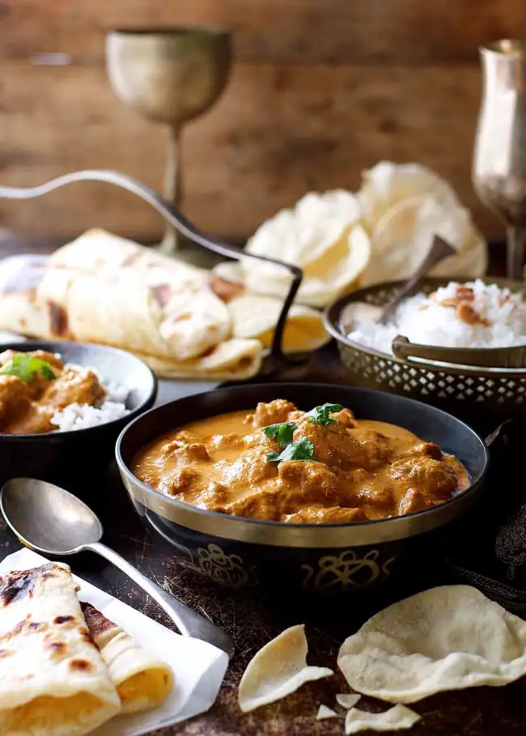

Beautiful Butter Chicken Recipe

Description
Butter chicken, also known as Murgh Makhani, is a rich and creamy Indian dish that has become a favorite in Indian cuisine worldwide. Originating from Northern India, it features tender pieces of chicken cooked in a velvety tomato-based sauce enriched with butter and cream. The preparation of butter chicken typically starts with marinating the chicken pieces in a mixture of yogurt and spices such as turmeric, garam masala, cumin, coriander, ginger, and garlic. This marinade not only infuses the chicken with flavor but also helps tenderize it. The marinated chicken is usually cooked in a tandoor (a traditional clay oven) or grilled until it develops a smoky, charred flavor. The sauce, or gravy, is the hallmark of butter chicken. It is made by simmering tomatoes, garlic, and ginger along with a blend of aromatic spices including garam masala, cumin, coriander, and chili powder. The mixture is then pureed to create a smooth, rich base. Butter and cream are added to this base, giving the sauce its characteristic richness and silky texture. Sometimes, a touch of sugar or honey is added to balance the flavors with a hint of sweetness. The cooked chicken is then added to the sauce and simmered until it is fully coated and imbued with the creamy, spiced flavors. Fresh cilantro (coriander) leaves are often used as a garnish, adding a fresh and vibrant touch. Butter chicken is typically served with Naan, Basmati Rice, and Raita. The combination of tender, flavorful chicken with the luxurious, buttery sauce makes butter chicken a beloved dish that is both comforting and indulgent.
Ingredients
- Marinade Ingredients
- 1/2 cup plain yoghurt
- 1 tbsp lemon juice
- 1 tsp turmeric powder
- 2 tsp garam masala
- 1/2 tsp tsp chilli powder or cayenne pepper powder
- 1 tsp ground cumin
- 1 tbsp freshly grated ginger
- 2 cloves crushed garlic
- 1.5 lb chicken thigh fillets, cut into bite size pieces
- Curry
- 2 tbsp ghee
- 1 cup tomato puree
- 1 cup heavy cream
- 1 tbsp sugar
- 1 1/4 tsp salt
- To serve with:
- Basmati rice
- Coriander/cilantro
Step-By-Step Procedure
- Optional blitz: for an extra smooth sauce, combine the first 8 ingredients in a food processor and blend until smooth.
- Marinade: Combine the first 8 ingredients with the chicken in a bowl. Cover and refrigerate overnight, or 4-24 hours.
- Heat the ghee (butter or oil) over high heat in a large fry pan. Take the chicken out of the Marinade but do not wipe or shake off the marinade from the chicken (but don’t pour the Marinade left in the bowl into the fry pan).
- Place chicken in the fry pan and cook for around 3 minutes, or until the chicken is white all over (it doesn't really brown because of the Marinade).
- Add the tomato passata, cream, sugar and salt. Also add any remaining marinade left in the bowl. Turn down to low and simmer for 20 minutes. Do a taste test to see if it needs more salt.
- Garnish with coriander/cilantro leaves. Serve with basmati rice.